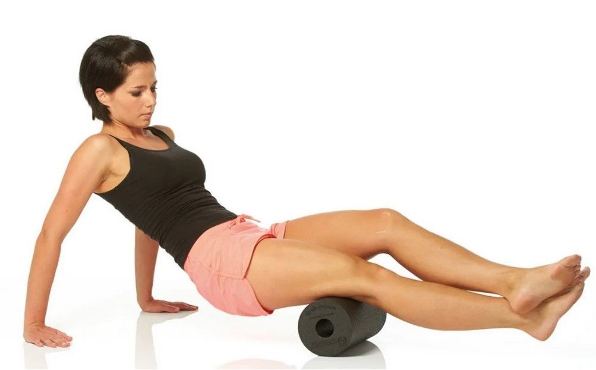
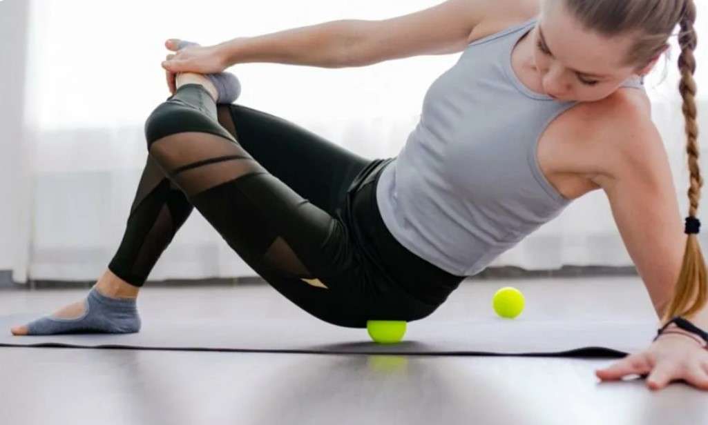
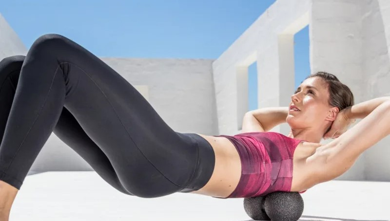
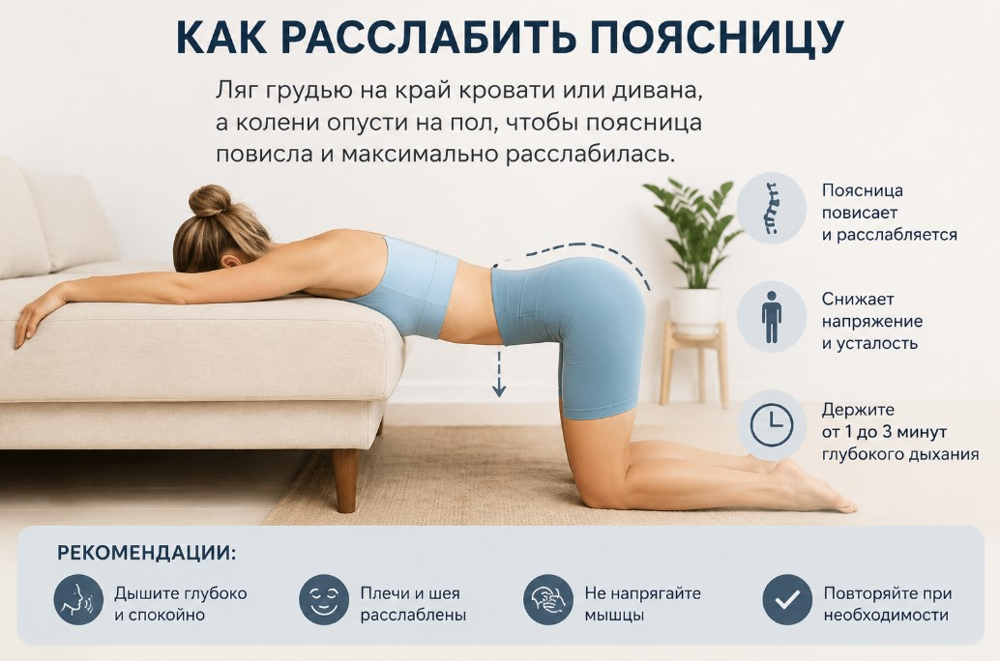

Точная техника — без ошибок
Инструменты у тебя на руках. Теперь самое важное: как ими работать. Сделаешь правильно, мышца отпустит и боль уйдёт. Сделаешь грубо или не там, забьёшь мышцу ещё сильнее. Поэтому сначала прочти правила, потом смотри фото и повторяй.
Главные правила прокатки
- Медленно. Не быстрее пары сантиметров в секунду. Спешка только раздражает мышцу.
- Боль терпимая. Та, что лечит, но не сквозь слёзы и не до потемнения в глазах.
- Нашёл болезненный узелок, задержись на нём. Прижми весом и дай ему продавиться, мышца постепенно отпустит.
- Никогда не катай прямо по позвоночнику. Только мышцы по бокам от него. Для спины для этого и нужен сдвоенный мяч: позвоночник ложится в ложбинку между шариками, а давят они по бокам.
- Сначала ноги, потом спина. Ноги чаще всего и есть корень боли в пояснице.
- Катай каждый день, как чувствуешь, что мышцы забились и устали.
Блок 1. Ноги (с них начинаем)
- Икры. Сядь на пол, ноги вытянуты, под икры подложи пластиковую трубу 50 мм. Опираешься руками, медленно катаешь от лодыжки к колену и обратно.
- Задняя и передняя поверхность бедра. Большой цилиндрический ролл под бедро, катай от колена к ягодице. Поворачивай ногу внутрь и наружу, чтобы пройти мышцу со всех сторон.
- Внешняя сторона бедра. Ляг на бок, большой ролл под внешнюю поверхность бедра, катай от колена к тазу.

- Ягодицы. Подложи под ягодицу мяч, закинь стопу этой ноги на колено другой и прокатывай, нажимая весом.

Блок 2. Спина
- Поясница и вдоль позвоночника. Возьми большой сдвоенный мяч-косточку 24×12, это основной инструмент для спины. Ляг на спину так, чтобы позвоночник попал в ложбинку между мячами, а сами мячи легли по бокам от него. Медленно прокатывай вверх-вниз, легко сгибая и разгибая колени. Для более узких мест и верха спины бери мяч поменьше, 16×8.

- Верх спины. Положи толстый ролл поперёк, ляг на него лопатками, руки за голову, колени согнуты. Медленно катай от нижнего края лопаток до плеч и обратно.
- Точечно. Маленький мяч 8 см подложи под конкретную болезненную точку (под лопаткой, глубоко в ягодице), прижми весом тела и держи, пока не отпустит.
Если боль острая
Тут особое правило. После первой прокатки по острой боли 2-3 дня не катай вообще. Дай воспалению в мышце утихнуть, иначе сделаешь хуже.
В эти дни нужен максимальный покой. Больше лежи, расслабляй поясницу. Хороший способ снять напряжение: ляг грудью на край кровати или дивана, а колени опусти на пол, чтобы поясница повисла и максимально расслабилась. Полежи так, дай мышцам отпустить. Когда боль утихнет, вернёшься к прокатке, и в этот раз будет легче.

Сколько по времени
Хватит 5-10 минут на основные группы за один подход. Не геройствуй и не катай до изнеможения. Лучше понемногу, но каждый день, мягко и регулярно. Спина копила спазм годами, дай ей время.